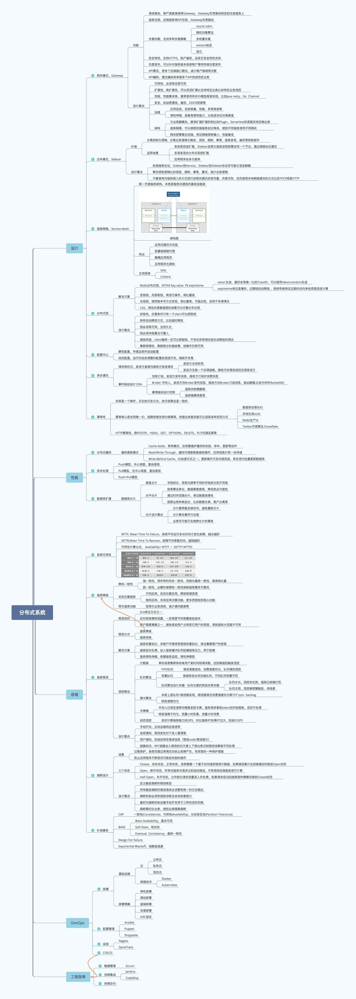
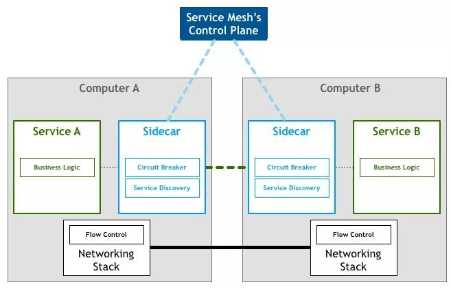

系统学习分布式架构设计对于技术人的成长非常关键。对于云原生开发者而言，如何设计出符合云原生设计哲学的应用，往往离不开分布式系统知识与方法论的运用。如何设计出高弹性、可配置、可分布、高性能、高容错、更安全、更韧性、快交付的云原生应用往往是衡量开发者水准的重要参考。
然而，分布式系统是一个很大的概念，从架构设计、研发流程、运维部署、工程效率等多个角度均有很深的知识可以挖掘，学习成本和难度相对较大。
分布式系统大图

设计
网关模式，Gateway
功能
请求路由，客户端直接调用 Gateway，Gateway 负责路由转发到注册服务上
服务注册，后端服务将 API 注册，Gateway 负责路由
负载均衡，支持多种负载策略
- round robin
- 随机均衡算法
- 多权重负载
- session 粘连
- 其它
安全特性，支持 HTTPS，账户鉴权，及其它安全特性支持
灰度发布，可以针对服务版本或者租户等特性做灰度发布
API 聚合，将多个后端接口聚合，减少客户端调用次数
API 编排，通过编排来串接多个 API 完成特定业务
设计要点
可用性，必须保证高可用
扩展性，可以灵活扩展以支持特定业务比如特定业务流控
高性能，通常使用异步 IO 模型框架实现，比如 Java netty，Go Channel
安全，如加密通信，鉴权，DDOS 防御等
运维
- 应用监控，包括容量，性能，异常检测等
- 弹性伸缩，具备高弹性能力，以低成本应对高峰值
架构
- 与业务解耦合，提供扩展扩展机制比如 Plugin，Serverless 的思路支持后端业务
- 服务隔离，可以按照后端服务划分网关，做到不同服务使用不同网关
- 网关部署靠近后端，保证网络损耗最小，性能最佳
边车模式，Sidecar
价值
分离控制与逻辑，分离业务逻辑与路由、流控、熔断、幂等、服务发现、鉴权等控制组件
适用场景
- 老系统改造扩展，Sidebar 进程与服务进程部署在同一个节点，通过网络协议通讯
- 多语言混合分布式系统扩展
- 应用程序由多方提供
设计要点
- 标准服务协议，Sidebar 到 Service，Sidebar 到 Sidebar 协议尽可能与语言解耦
- 聚合控制逻辑比如流控、熔断、幂等、重试，减少业务逻辑
- 不要使用对服务侵入的方式进行进程间通讯如信号量、共享内存，优先使用本地网络通讯的方式比如 TPCP 或者 HTTP
服务网格，Service Mesh
新一代微服务架构，本质是服务间通信的基础设施层。

架构图（图片来源于网络，若有侵权请联系作者删除）
特点
- 应用间通讯中间层
- 轻量级网络代理
- 解耦应用程序
- 应用程序无感知
主流框架
- Istio
- Linkerd
分布式锁
解决方案
Redis 分布式锁，SETNX key value PX expiretime
- value 生成，最好全局唯一比如 TraceID，可以使用 /dev/urandom 生成
- expiretime 单位是毫秒，过期锁自动释放 ，锁持有者保证过期时间内争抢资源完成计算
悲观锁，先获取锁，再进行操作，吞吐量底
乐观锁，使用版本号方式实现，吞吐量高，可能出现锁异常，适用于多读情况
CAS，修改共享数据源的场景可以代替分布式锁
设计要点
- 排他性，任意条件只有一个 client 可以获取锁
- 锁有自动释放方式，比如超时释放
- 锁必须高可用，且持久化
- 锁必须非阻塞且可重入
- 避免死锁，client最终一定可以获取锁，不存在异常情况锁无法释放的情况
- 集群容错性，集群部分机器故障，锁操作仍然可用
配置中心
- 静态配置，环境及软件启动配置
- 动态配置，运行时动态调整的配置如流控开关，熔断开关等
异步通讯
请求响应式，发送方直接向接收方发送请求
- 发送方主动轮询
- 发送方注册一个回调函数，接收方处理完成后回调发送方
事件驱动设计（EDA）
- 消息订阅，发送方发布消息，接收方订阅并消费消息
- Broker 中间人，发送方向 Broker 发布消息，接收方向 Broker 订阅消息，彼此解耦,比如中间件 RocketMQ
- 事情驱动设计优势
- 服务间依赖解除
- 服务隔离程度高
幂等性
本质是一个操作，无论执行多少次，执行结果总是一致的
幂等核心是全局唯一 ID，链路依据全局 ID 做幂等，依据业务复杂度可以选取多种实现方式
- 数据库自增长 ID
- 本地生成 uuid
- Redis 生产 id
- Twitter 开源算法 Snowflake
HTTP 幂等性，除 POST 外，HEAD，GET，OPTIONS，DELETE，PUT 均满足幂等
性能
分布式缓存
缓存更新模式
- Cache Aside，常用模式，应用要维护缓存的失效、命中、更新等动作
- Read/Write Through，缓存代理更新数据库操作，应用视角只有一份存储
- Write Behind Cache，IO 加速方式之一，更新操作只在内测完成，异步进行批量更新数据库
异步处理
- Push 模型，中心调度，复杂度高
- Pull 模型，无中心调度，复杂度底
- Push+Pull 模型
数据库扩展
数据库分片
垂直分片
- 字段拆分，将变化频率不同的字段拆分到不同表
水平分片
- 哈希算法来分，数据离散度高，降低热点可能性
- 通过时间范围分片，保证数据连续性
分片设计要点
- 分片要预留足够空间，避免重新分片
- 分片聚合要并行去做
- 业务尽可能不去做跨分片的事务
容错
系统可用性
- MTTF, Mean Time To Failure，系统平均运行多长时间才发生故障，越长越好
- MTTR,Mean Time To Recover，故障平均修复时间，越短越好
- 可用性计算公式， Availability= MTTF /（MTTF+MTTR）
服务降级
降低一致性
- 强一致性，将所有的同步一致性，切换为最终一致性，提高吞吐量
- 弱一致性，必要时候牺牲一致性换取服务整体可靠性
关闭次要服务
- 不同应用，关闭次要应用，释放物理资源
- 相同应用，关闭应用次要功能，更多资源给到核心功能
简化服务功能
- 如简化业务流程，减少通讯数据等
服务限流
限流目的
- SLA 保证方式之一
- 应对突发峰刺流量，一定程度节约容量规划成本
- 租户隔离策略之一，避免某些用户占用其它用户的资源，导致服务大范围不可用
限流方式
- 服务降级
- 服务拒绝
解决方案
- 服务权重划分，多租户环境将资源按权重划分，保证重要客户的资源
- 服务延时处理，加入服务缓冲队列延缓服务压力，用于削峰
- 服务弹性伸缩，依赖服务监控，弹性伸缩容
流控算法
计数器
- 单机或者集群保存某用户某时间段请求数，达到阈值则触发流控
队列算法
- FIFO 队列
- 请求速度波动，消费速度均匀，队列满则流控
- 权重队列
- 按服务划分优先级队列，不同队列权重不同
- 队列算法设计关键：队列长度的预设非常关键
- 队列太长，流控未生效，服务已经被打死
- 队列太短，流控被频繁触发，体验差
漏斗算法
- 本质上是队列+限流器实现，限流器保证消费速度均匀类 TCP sync backlog
- 转发速度均匀
令牌桶
- 中间人已恒定速率向桶里发放令牌，服务请求拿到 token 则开始服务，否则不处理
- 转发速度不均匀，流量小时积累，流量大时消费
动态流控
- 实时计算服务能力如 QPS，对比服务 RT 如果 RT 过大，则减少 QPS
设计要点
- 手动开关，主动运维和应急使用
- 监控通知，限流发生时干系人要清楚
- 用户感知，如返回特定错误信息（错误code/错误提示）
- 链路标识，RPC链路加入限流标识方便上下游业务识别限流场景做不同处理
熔断设计
场景
- 过载保护，系统负载过高时，为防止故障产生而采取的一种保护措施
- 防止应用程序不断尝试可能会失败的操作
三个状态
- Closed，闭合状态，正常状态，系统需要基于时间线到错误计数器，如果错误累计达到阈值则切换至 Open 状态
- Open，断开状态，所有对服务对请求立即返回错误，不用调用后端服务进行计算
- Half-Open，半开状态，允许部分请求流量进入并处理，如果请求成功则按照某种策略切换到 Closed 状态
设计要点
- 定义触发熔断的错误类型
- 所有触发熔断的错误请求必须要有统一的日志输出
- 熔断机制必须有服务诊断及自动恢复能力
- 最好为熔断机制设置手动开关用于三种状态的切换
- 熔断要切分业务，做到业务隔离熔断
补偿事务
CAP
- 一致性 (Consistence)
- 可用性 (Availability)
- 分区容忍性 (Partition Tolerance)
BASE
- Basic Availabillity，基本可用
- Soft State，软状态
- Eventual Consistency，最终一致性
Design For Failure
Exponential Blackoff，指数级退避
DevOps
部署
基础设施
云
- 公有云
- 私有云
- 混合云
容器技术
- Docker
- Kubernetes
部署策略
- 停机部署
- 滚动部署
- 蓝绿部署
- 灰度部署
- A/B 测试
配置管理
- Ansible
- Puppet
- Shippable
监控
- Nagios
- DynaTrace
CI 与 CD
工程效率
敏捷管理
- Scrum
持续集成
- Jenkins
- CodeShip
持续交付
总结
分布式系统有着广泛的应用，当业务足够规模化后，最终面临的技术问题都是通过践行分布式系统架构的设计理念和方法论得以解决，可以说分布式系统架构的知识与方法论是当前互联网应用规模化后的通用解决方案。